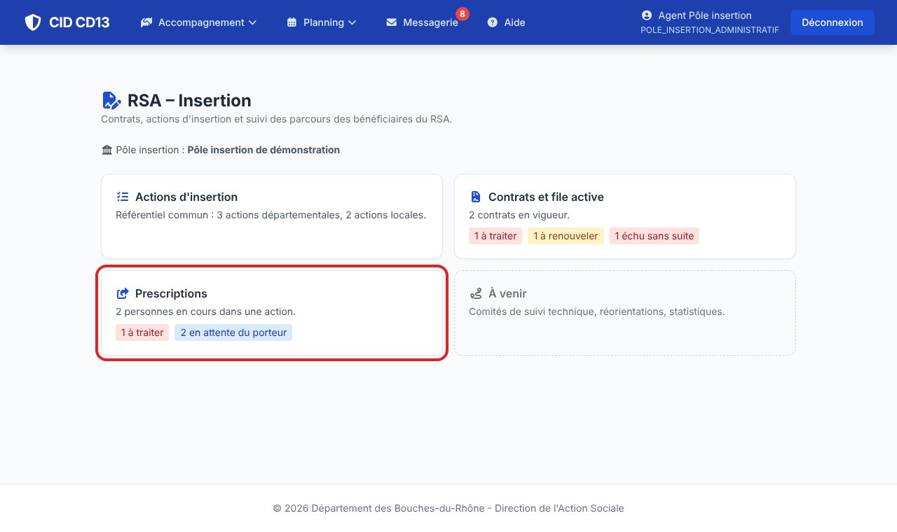
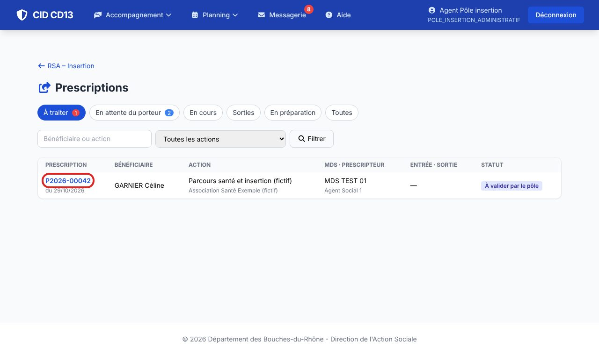
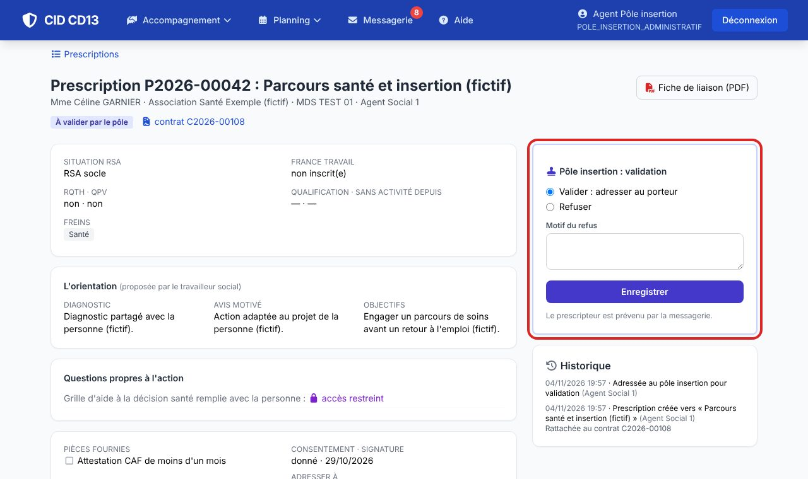
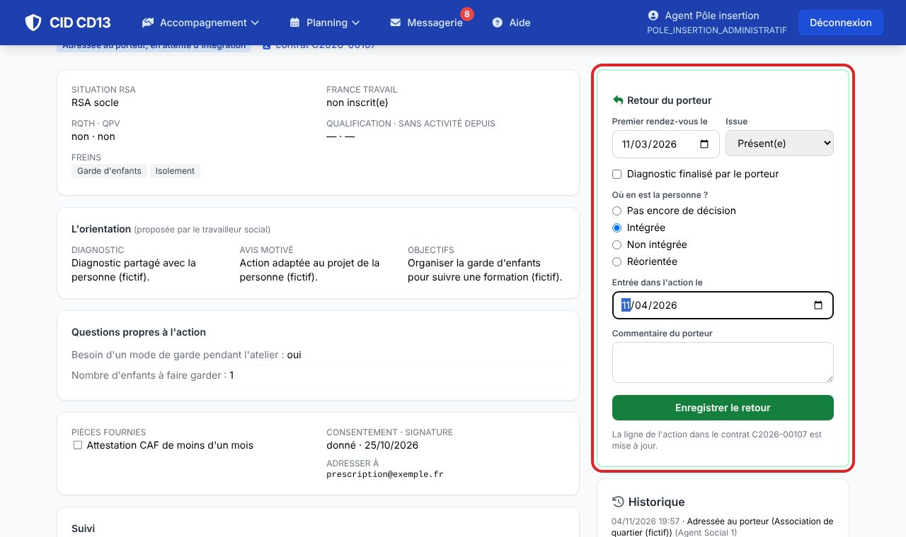
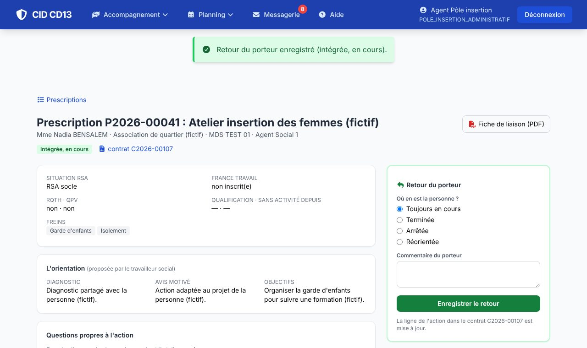

1Voir ce qui est à valider


- L'onglet À traiter liste les prescriptions qui attendent la validation de votre pôle.
- Le pôle ne voit une prescription qu'une fois adressée par la MDS (jamais en préparation).
2Valider ou refuser

- Valider : la prescription est adressée au porteur. Refuser : le motif est obligatoire.
- Le prescripteur est prévenu par la messagerie.
3Noter le retour du porteur


- Premier rendez-vous (présent, absent, excusé, reconvoqué), diagnostic finalisé, puis l'issue : intégrée (date d'entrée), non intégrée (motif) ou réorientée.
- Le prescripteur est prévenu, et la ligne de l'action dans le contrat est mise à jour.
Bon à savoir
- Une action passe par le pôle quand sa fiche porte « Prescription validée par le pôle insertion » (réglage du référentiel, aussi dans l'import CSV : colonne validation_pole).
Et ensuite ?
Cliquez sur une image pour l'agrandir. Le cadre rouge montre où cliquer ou quoi remplir. Toutes les données affichées sont fictives.